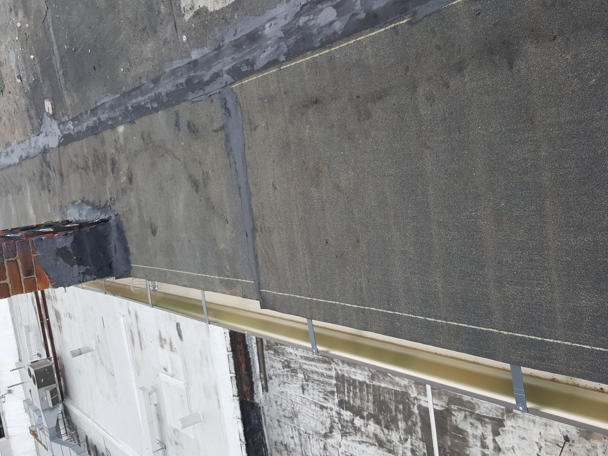
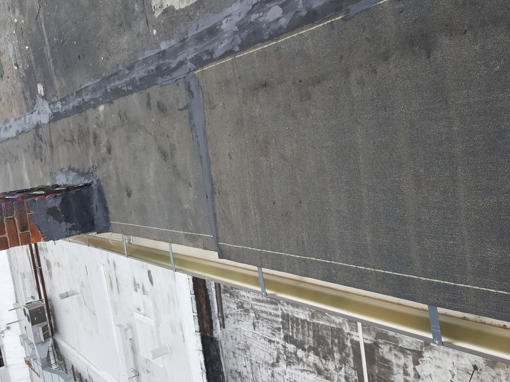
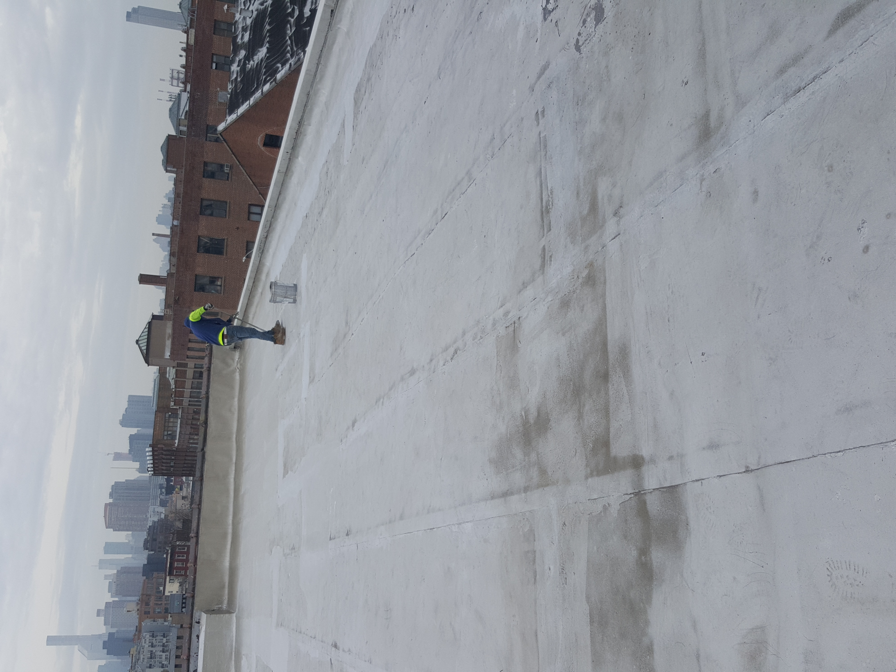
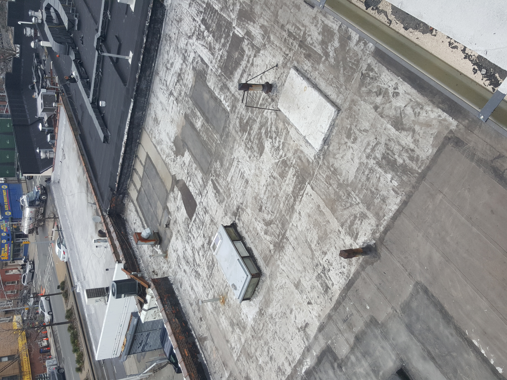
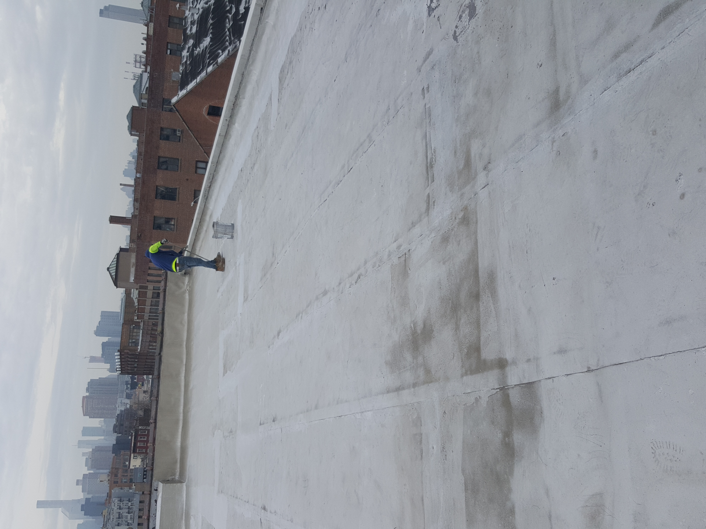
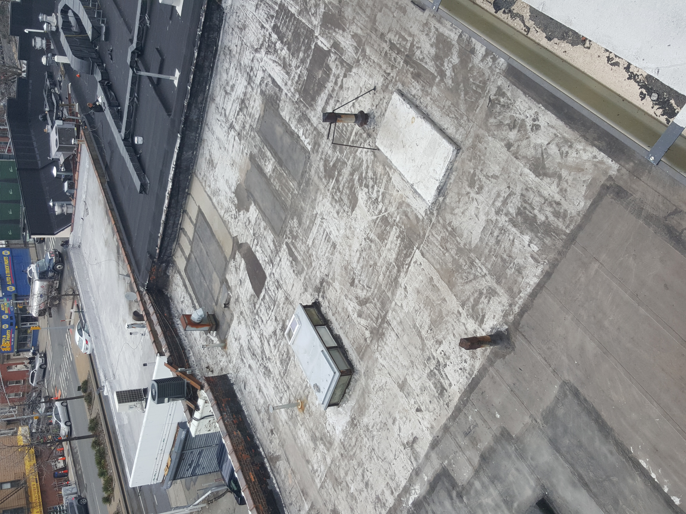
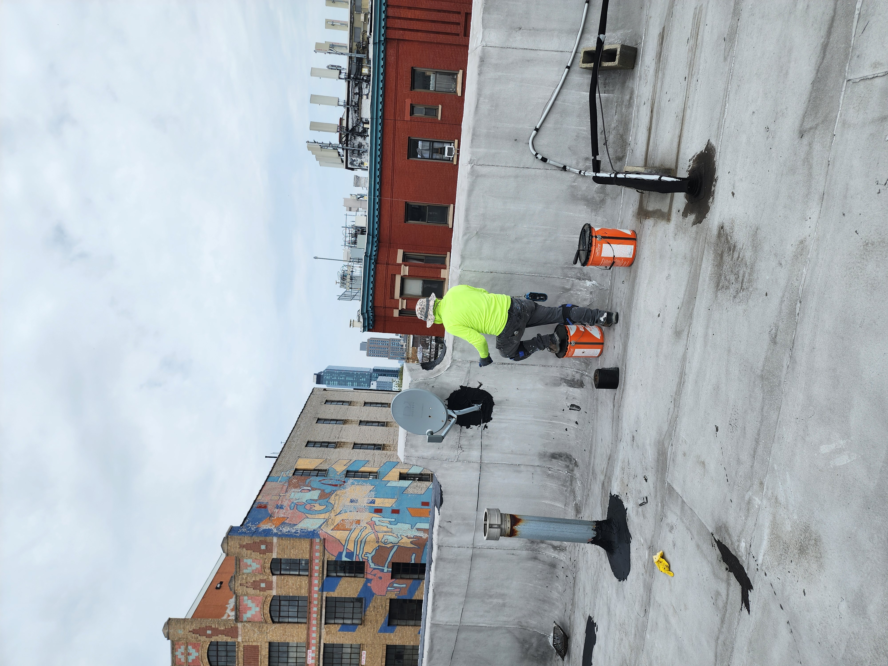
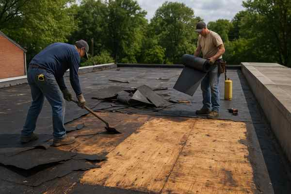
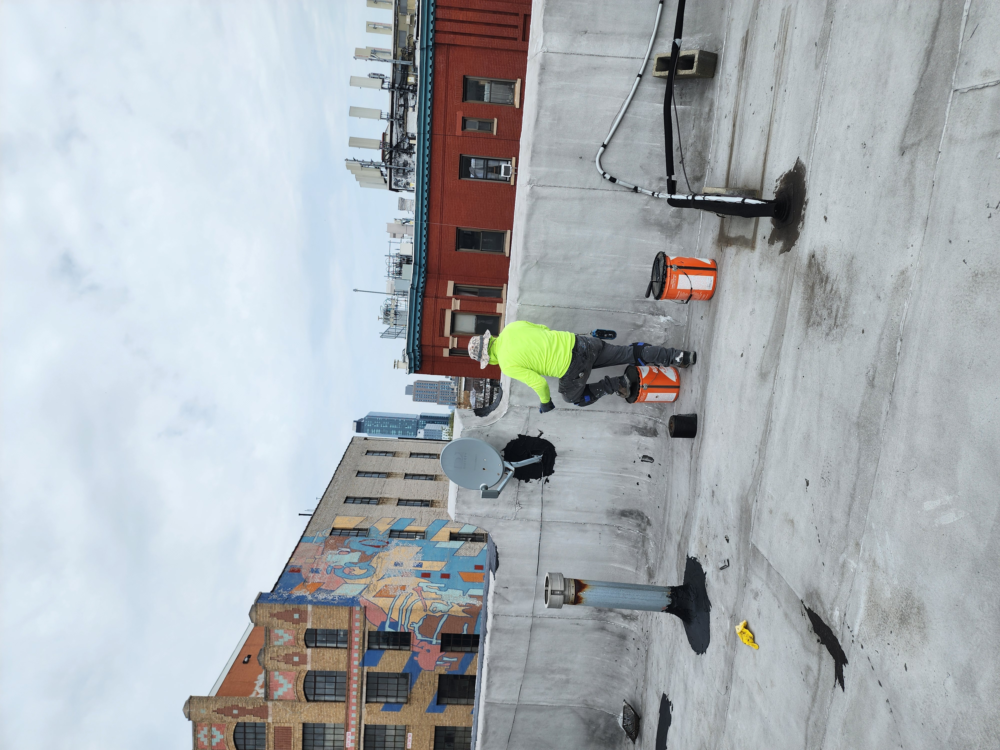
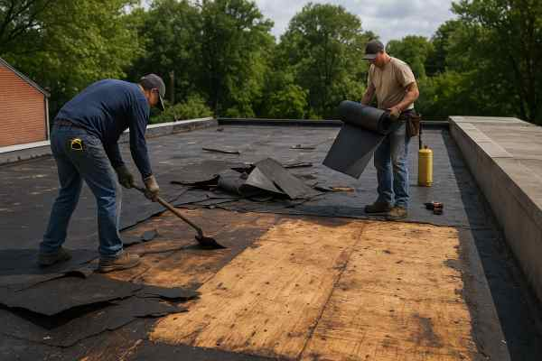

What Is Roofing?
Roofing involves installing, repairing, or replacing the top protective layer of your home or building. A strong roof shields against weather, improves energy efficiency, and enhances the property’s overall value and safety.
Why Is Roofing Important?
- Protects your home from leaks, mold, and water damage
- Improves energy efficiency with proper insulation
- Boosts curb appeal and resale value
- Extends the overall lifespan of your home
Steps in a Roofing Project
- Inspection & Assessment: Check roof condition for damage or wear.
- Material Selection: Choose shingles, tiles, or metal roofing.
- Preparation: Remove old roofing and prepare the structure.
- Installation: Install new roofing materials with professional precision.
- Final Inspection: Ensure safety, quality, and durability.
Signs You May Need Roofing Work
- Leaks, water stains, or mold inside the home
- Missing, cracked, or curling shingles
- Roof sagging or visible structural issues
- Age of roof exceeds 15–20 years
Note: Regular inspections and timely repairs can prevent costly damage, extend roof life, and ensure your home stays safe and efficient.
 

 



 


